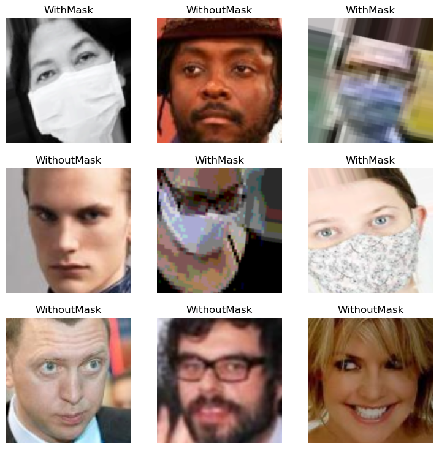
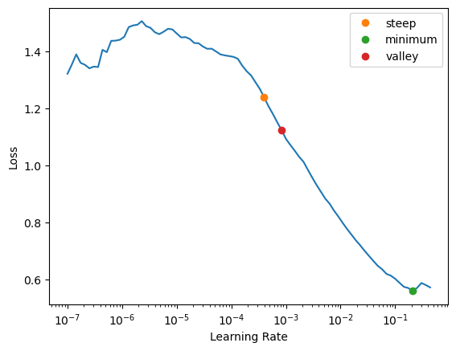
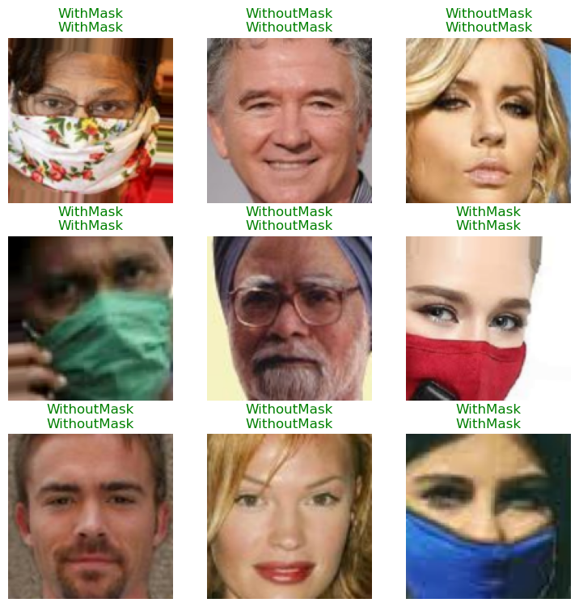
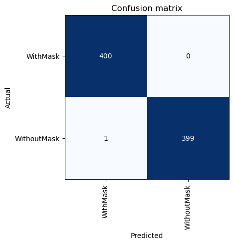
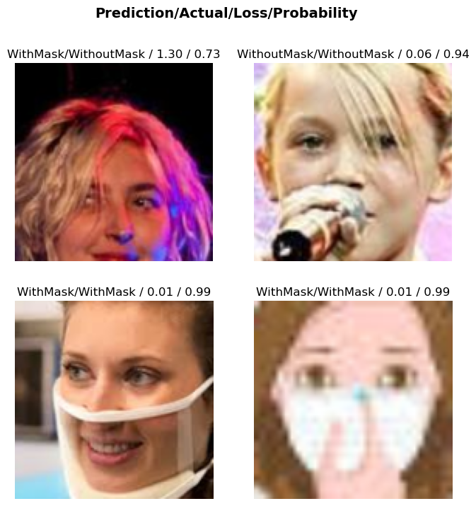
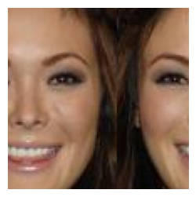

from fastai.imports import *With COVID-19 mutating and still posing a threat globally, wearing a 😷 is still mandatory in many countries. In this post, we will see how to train a simple computer vision model to detect whether the person is wearing a facemask or not. Let’s start by downloading the appropriate dataset1 from kaggle.
You can either download it manually from kaggle or use its free API. Let’s do the latter.
Let’s create a directory called data to store and extract our desired dataset.
data_dir = Path('./data')
data_dir.mkdir(parents=False, exist_ok=True)path = Path('.')
path.ls()(#3) [Path('mask.jpg'),Path('facemask_detection.ipynb'),Path('data')]Loading dataset
import kagglekaggle.api.dataset_download_files('ashishjangra27/face-mask-12k-images-dataset', path=path/'data', unzip=True)(path/'data').ls()(#1) [Path('data/Face Mask Dataset')](path/'data/Face Mask Dataset/').ls()(#3) [Path('data/Face Mask Dataset/Train'),Path('data/Face Mask Dataset/Validation'),Path('data/Face Mask Dataset/Test')](path/'data/Face Mask Dataset/Train').ls()(#2) [Path('data/Face Mask Dataset/Train/WithoutMask'),Path('data/Face Mask Dataset/Train/WithMask')]We notice that there’re three folders neatly separated into different datasets with each folder in turn sectioned into images with/without masks. Let’s load them…
Checking dataset
from fastai.vision.all import *ims = get_image_files(path/'data/Face Mask Dataset/')
ims(#11792) [Path('data/Face Mask Dataset/Train/WithoutMask/1092.png'),Path('data/Face Mask Dataset/Train/WithoutMask/1460.png'),Path('data/Face Mask Dataset/Train/WithoutMask/3881.png'),Path('data/Face Mask Dataset/Train/WithoutMask/982.png'),Path('data/Face Mask Dataset/Train/WithoutMask/2662.png'),Path('data/Face Mask Dataset/Train/WithoutMask/4602.png'),Path('data/Face Mask Dataset/Train/WithoutMask/1106.png'),Path('data/Face Mask Dataset/Train/WithoutMask/5205.png'),Path('data/Face Mask Dataset/Train/WithoutMask/1776.png'),Path('data/Face Mask Dataset/Train/WithoutMask/4309.png')...]failed = verify_images(ims)
failed(#0) []As we notice, there’re about ~12,000 images… and no invalid files. That’s good!
ims[0]Path('data/Face Mask Dataset/Train/WithoutMask/1092.png')im = load_image(ims[0])
imim.shape(108, 108)After testing a few more images, we can notice that many of them have dimensions below 128x128. So, let’s use fastai’s DataBlock & dataloaders to load these images. DataBlock allows us to construct datasets with a lot of flexibility at each step. We’ll see how:
faces = DataBlock(
blocks=(ImageBlock, CategoryBlock),
get_items=partial(get_image_files, folders=['Train', 'Validation']),
get_y=parent_label,
splitter=GrandparentSplitter(train_name='Train', valid_name='Validation'),
item_tfms=Resize(128),
)Let’s deconstruct what we did above:
blockstell what kind of datablock we’re building… in this case, we want to do image classification. Hence, we load an image and assign a category to it.get_itemstell how & where to look for our files. Since, we’re dealing with images, we useget_image_files. We usepartial(fromfunctools) to fix the folders attribute as we don’t want to pick images from test set as well.get_yprovides label for our classes. Each image should ideally be labelledWithMaskorWithoutMask.splitterhelps us split the dataset into training & validation sets by separating images fromTrain&Validationfoldersitem_tfmsare the transformations (or a set of operations) that we perform on each item (in this case, an image) before we bunch them together as a batch. In this case, we are resizing all images to128x128.
Now, let’s provide the source path of the images to finally load them with dataloaders.
dls = faces.dataloaders(path/'data/Face Mask Dataset/', bs=64)dls.train.show_batch()
We can check what classes our data falls under by looking at the .c attribute of our dataloaders object.
dls.c2and .vocab attribute tells what those classes and their order is!
dls.vocab['WithMask', 'WithoutMask']Looks good! Now let’s train a model… we can start with a simple one like resnet18 and use a more complex one if needed. We track our model’s performance by monitoring its accuracy.
Training a model
import warnings
warnings.filterwarnings('ignore')learner = vision_learner(dls, resnet18, metrics=accuracy)
Note
if this is the first time you run the above command, it will download a pre-trained model onto the disk.
learner.lr_find(suggest_funcs=(steep, minimum, valley))SuggestedLRs(steep=0.0003981071640737355, minimum=0.02089296132326126, valley=0.0008317637839354575)
using the builtin learning rate finder, it looks like a good value is ~5e-3… let’s train the model with that for 3 epochs!
learner.fine_tune(3, 5e-3)| epoch | train_loss | valid_loss | accuracy | time |
|---|---|---|---|---|
| 0 | 0.095269 | 0.025470 | 0.990000 | 00:12 |
| epoch | train_loss | valid_loss | accuracy | time |
|---|---|---|---|---|
| 0 | 0.028186 | 0.016682 | 0.996250 | 00:16 |
| 1 | 0.011198 | 0.006065 | 0.997500 | 00:15 |
| 2 | 0.002301 | 0.001746 | 0.998750 | 00:15 |
Wow! a near 100% accuracy! 🎉😍 Fastai always ensures that the metrics are reported on the validation dataset, so that’s a good sign. Let’s see what the model learnt!
learner.show_results()
verifying results
interp = ClassificationInterpretation.from_learner(learner)interp.plot_confusion_matrix()
Let’s see what the model is getting wrong or is most unsure about by plotting its top losses!
interp.plot_top_losses(4, figsize=(8, 8))
We only got one incorrect image & the rest are correct but a bit inconfident (and even that’s low for the 2nd row of images).
Image Shifting
Let’s do a bit of fun! Sometimes, it’s known that some image recognition models predict completely different classes when even a few pixels are changed… hence let’s see how robust our model is by rotating and wrapping an image and then letting our model predict.
def rotate_and_wrap_image(image, percentage=.4):
im = tensor(image)
val = int(im.shape[1] * percentage)
return torch.cat((im[:, val:], im[:, :val]), dim=1) im.resize((128, 128))show_image(rotate_and_wrap_image(im));
learner.predict(rotate_and_wrap_image(im))('WithoutMask', TensorBase(1), TensorBase([3.2003e-07, 1.0000e+00]))interesting! our model still predicts correct class and this worked on many other tested images as well. This might mean that the model has actually learnt to identify a 😷 and not ‘remember’ the image itself.
Predict on test set
Let’s provide the test images to our model and see how well it predicts!
test_ims = get_image_files(path/'data/Face Mask Dataset/' , folders=['Test'])
test_ims(#992) [Path('data/Face Mask Dataset/Test/WithoutMask/1940.png'),Path('data/Face Mask Dataset/Test/WithoutMask/1969.png'),Path('data/Face Mask Dataset/Test/WithoutMask/45.png'),Path('data/Face Mask Dataset/Test/WithoutMask/2497.png'),Path('data/Face Mask Dataset/Test/WithoutMask/807.png'),Path('data/Face Mask Dataset/Test/WithoutMask/3830.png'),Path('data/Face Mask Dataset/Test/WithoutMask/972.png'),Path('data/Face Mask Dataset/Test/WithoutMask/3825.png'),Path('data/Face Mask Dataset/Test/WithoutMask/4024.png'),Path('data/Face Mask Dataset/Test/WithoutMask/4178.png')...]test_dl = learner.dls.test_dl(test_ims)preds, _ = learner.get_preds(dl=test_dl)
preds.shapetorch.Size([992, 2])preds[:5]TensorBase([[4.3606e-05, 9.9996e-01],
[3.7663e-07, 1.0000e+00],
[2.5526e-06, 1.0000e+00],
[3.0737e-10, 1.0000e+00],
[1.1245e-08, 1.0000e+00]])We got probabilities… we need to somehow use them to compare with the actual labels. First, let’s get the actual labels.
We know from the .vocab attribute that class 0 with WithMask and 1 is WithoutMask. So let’s extract the label from each test image based on which folder it’s coming from.
test_ims[0]Path('data/Face Mask Dataset/Test/WithoutMask/1940.png')test_ims[0].parentPath('data/Face Mask Dataset/Test/WithoutMask')test_ims[0].parent.stem'WithoutMask'targets = test_ims.map(lambda x: 1 * (x.parent.stem == 'WithoutMask'))
targets(#992) [1,1,1,1,1,1,1,1,1,1...]preds.argmax(1).shape, len(targets)(torch.Size([992]), 992)Now we compare our predictions with the targets and take the average like so:
(preds.argmax(1) == tensor(targets)).float().mean()TensorBase(0.9990)Sweet! 💗
Conclusion
We now know how to train a simple computer vision model to detect facemasks! However, we can’t completely generalize and say that our model can be used in the actual real world! There are pitfalls and it is always important to understand the limitations of our models.
Always look at where the data is coming from. In this case, it is a bunch of google images and celebrity faces. All the images are cropped around the face. So our model might not predict well when given an unclipped full image of a person with/without a mask. It would still predict one of the two classes even when we submit a completely different image, say a 🦒. Also the image quality it was trained on is around 128x128 pixels, which is rather low.
We will possibly see how to address these issues in another post covering another dataset! Until then, 👋
Footnotes
https://www.kaggle.com/datasets/ashishjangra27/face-mask-12k-images-dataset↩︎